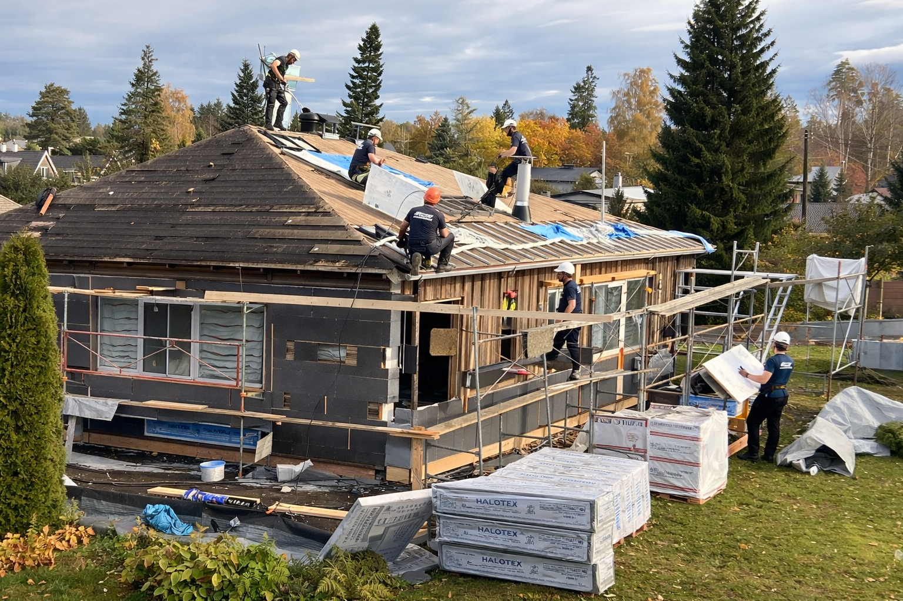

Katusetööd Tallinnas ja Harjumaal
Katuse hooldus, parandused, pesu, värvimine ja renoveerimine.

RK Meistrid OÜ pakub katuse hooldust, pesu, parandusi ja renoveerimistöid Tallinnas ja Harjumaal. Päringu hindamisel lähtume objekti seisukorrast, tööjärjekorrast, materjalidest ja realistlikust ajakavast.
Katusetööd algavad katuse seisukorra hindamisest. Kontrollime katusekatet, läbiviike, harju, ääreplekke, vihmaveerenne ja kohti, kus vesi võib liikuda konstruktsiooni sisse. Selle põhjal saab otsustada, kas vaja on hooldust, pesu, lokaalseid parandusi, värvimise ettevalmistust või põhjalikumat renoveerimist.
Renoveeri Kodu teeb katusetöödega seotud hooldus- ja parandustöid Tallinnas ning Harjumaal. Eraldi käsitleme talviseid lumetöid, sest katuse lume ja jää eemaldamine on hooajaline ohutustöö, samal ajal kui see leht keskendub katuse remondile, pesule, hooldusele ja renoveerimise planeerimisele.
Mida teenus sisaldab?
- katusekatte, harjade, servade ja läbiviikude visuaalne kontroll
- katuse pesu, sambla ja mustuse eemaldamine ning pinna ettevalmistus
- väiksemate lekete, kinnituste, tihendite ja ääreplekkide kontroll
- katuse värvimise, hoolduse või renoveerimise tööjärjekorra planeerimine
- turvalise ligipääsu, tellingu või tõstuki vajaduse hindamine
Millal seda tellida?
Katusetöid tasub tellida siis, kui katus on sammaldunud, värv või kaitsekiht on kulunud, vihmaveerennid ei tööta korralikult, läbiviikude ümbrus vajab kontrolli või ruumis on tekkinud niiskuse/lekkekahtlus. Õigel ajal tehtud hooldus aitab vältida suuremaid niiskuskahjustusi.
Tööprotsess
Ülevaatus
Vaatame üle katusekatte tüübi, kalde, ligipääsu, läbiviigud, rennid, harjad, kinnitused ja nähtavad kahjustused.
Tööde teostus
Teeme kokkulepitud puhastuse, pesu, värvimise ettevalmistuse, väiksemad parandused või hooldustööd katusematerjali ja ohutusnõuete järgi.
Kontroll ja soovitused
Pärast tööd anname ülevaate, millised kohad vajavad jälgimist, millal võiks teha järgmise hoolduse ja kas katus vajab lähiajal suuremat remonti.
Katuse hoolduse hindamine
Katusetööde hind sõltub katuse tüübist, kaldenurgast, ligipääsust, töö kõrgusest, kahjustuste ulatusest, turvavarustusest ja sellest, kas tööks on vaja tellingut või tõstukit. Katuse pesu, värvimine, lekkekoha parandus ja renoveerimise ettevalmistus on erineva töömahuga, seetõttu aitavad fotod ja objekti kirjeldus pakkumist täpsustada.
Töö käigus pöörame tähelepanu läbiviikudele, rennidele, kinnitustele, harjaplekkidele ja kohtadele, kus vesi võib hakata konstruktsiooni kahjustama. Kui probleem puudutab talvist lund või jääpurikaid, käsitleme seda eraldi lumetööde teenusena.
Kohalik kogemus ja tööde täpsustamine
Tallinna ja Harjumaa objektidel on katuste seisukord väga erinev: osa vajab regulaarset hooldust, osa lekkekohtade kontrolli ja osa põhjalikumat renoveerimise planeerimist. Päringu hindamisel vaatame alati, milline on ligipääs, kas töö toimub eramu või ärihoone juures, kuidas liigub vihmavesi ja kas töö mõjutab fassaadi, räästast või siseviimistlust.
Renoveeri Kodu eesmärk on anda selge ja realistlik hinnang enne töö alustamist. Kui fotodest ei piisa, lepime kokku objekti ülevaatuse. Nii saab täpsustada töömahu, materjalid, ohutuslahenduse, ajakulu ja võimalikud riskikohad enne, kui töö päriselt käima läheb.
Katuse hooldust tasub planeerida enne suuremaid vihmaperioode ja talve. Kui väikesed lekkekohad, ummistunud rennid või lahtised detailid jäävad märkamata, võivad need hiljem mõjutada fassaadi, soojustust ja siseviimistlust.
Katusetööde hinnad
Katusetööde hind sõltub katuse tüübist, kaldenurgast, ligipääsust, pesu või paranduse mahust ning ohutusnõuetest. Fotod katusest, rennidest ja läbiviikudest aitavad töömahtu paremini hinnata.
Hinnapäringu kiirendamiseks lisa võimalusel fotod, mõõdud, objekti asukoht ja soovitud tähtaeg. Nii saame paremini aru, kas töö vajab objektikülastust või saab esmase hinnangu anda kirjelduse põhjal.
Praktiline tööinfo katusetööde kohta
Materjalid
Katusetöödel sõltub töövõte katusematerjalist. Plekk-katus, kivikatus, eterniit, bituumen ja erinevad läbiviigud vajavad erinevat puhastust, parandust ja hooldust. Tähelepanu tuleb pöörata kinnitustele, tihenditele, harjadele, ääreplekkidele ja vee liikumisele.
Ajakulu
Ajakulu sõltub katuse kaldest, ligipääsust, ilmast, ohutuslahendusest ja kahjustuste ulatusest. Märja, jäise või tugeva tuulega katusel ei ole mõistlik kvaliteedi arvelt kiirustada.
Hinnategurid
Hinda mõjutavad katuse pindala, kõrgus, turvavarustus, läbiviikude arv, vihmaveesüsteemid ja vajadus tellingu või tõstuki järele.
Levinud vead
Levinud vead on väikeste lekete edasilükkamine, läbiviikude tihenduse kontrollimata jätmine ja katuse pesu tegemine viisil, mis kahjustab kattematerjali.
Soovitused kliendile
Saada fotod probleemkohast, kogu katusepinnast, vihmaveerennidest, läbiviikudest ja ligipääsust. Kui probleem ilmneb ainult vihmaga, kirjelda, kust vesi sisse tuleb, millal see tekib ja kas sama koht on varem parandatud.
Korduma kippuvad küsimused
Kas teete katuse pesu?
Jah, teeme katuse puhastust ja pesu vastavalt katusekatte seisukorrale.
Kas värvite katuseid?
Jah, sobiva pinna ja ettevalmistuse korral teeme katuse värvimisega seotud töid.
Kas teete lumekoristust sama teenuse all?
Lumekoristus on eraldi lumetööde teenus, et talvised kiirtööd oleksid selgelt eristatavad.
Kas katusele minek on ohutu?
Töötame ainult siis, kui ligipääs ja ilm võimaldavad tööd ohutult teha. Vajadusel kasutame turvavarustust või tellinguid.
Kas väikest lekkekohta saab parandada ilma kogu katust vahetamata?
Sageli saab, kui kahjustus on lokaalne ja katuse üldseisukord on hea. Kui probleem kordub mitmes kohas, tuleb hinnata laiemat renoveerimisvajadust.
Kas katuse pesu võib katust kahjustada?
Jah, kui kasutatakse vale survet või töövõtet. Pesu tuleb teha katusematerjali järgi, et mitte kahjustada pinda, kinnitusi ega kaitsekihti.
Kas katusetöid saab teha talvel?
Mõningaid hooldus- ja avariitöid saab teha, kuid ilm, lumi, jää ja ohutus piiravad tööde ulatust. Suuremad tööd on mõistlik planeerida sobivamale ajale.
Kas kontrollite ka vihmaveerenne?
Jah, katuse ülevaatusel on rennid ja vee liikumine oluline osa, sest ummistus või vale kalle võib tekitada fassaadi- ja niiskuskahjustusi.
Milliste töödega katusetööd tavaliselt seostuvad?
Katusetööd mõjutavad otseselt fassaadi, räästast ja hoone niiskuskaitset. Kui töö toimub kõrgemal või järsema kaldega pinnal, tuleb sageli planeerida turvaline ligipääs ja tööplatvorm. Katuse servade ja fassaadi kokkupuutekohas võib töö seostuda välisseina paranduste või hooldusega, talvisel ajal aga katuse lume ja jää eemaldamisega.